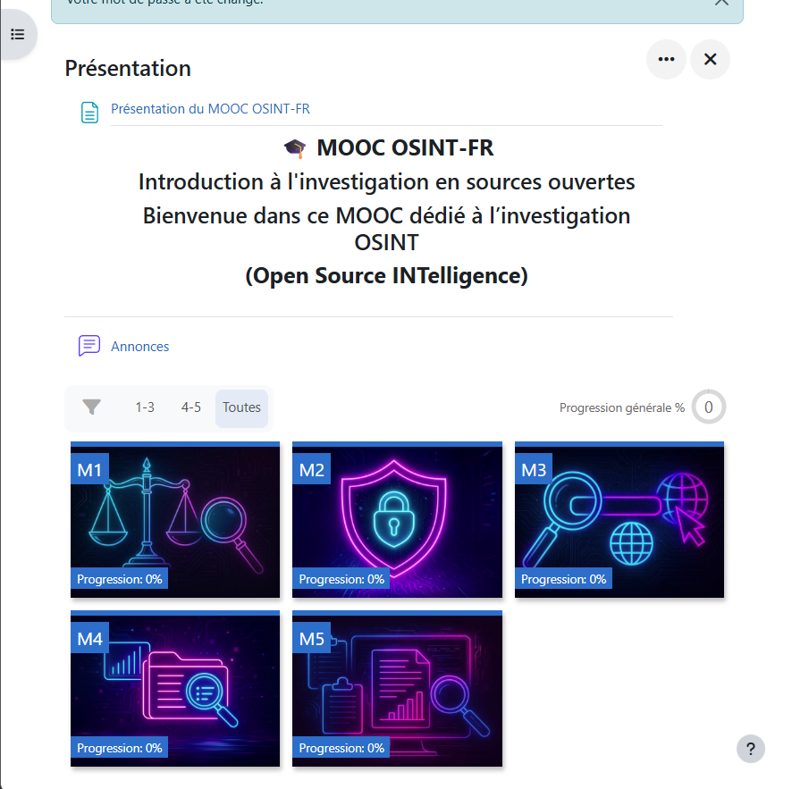

Construire une démarche personnelle d'acquisition de compétences pour enrichir mon parcours professionnel.
🔒 Cybersécurité🖥️ Administration Systèmes🌐 Réseaux💻 Développement
Adrien BLAIZE
BTS SIO — SISR · Lycée La Martinière Duchère
Plan de la présentation
Sommaire
01
Mon projet professionnel & besoins
Objectifs, pourquoi me certifier, valorisation CV & salaire
Slides 3 – 4
02
L'offre de certifications
3 types : pratique, théorique, transversale
Slide 5
03
Mes certifications obtenues
PIX, MOOC ANSSI, OpenClassroom, Root-Me / CTF
Slide 6
04
Certifications en cours & court terme
Stormshield CSNA, CCNA, MOOC OSINT
Slide 7
05
Objectifs long terme
CISSP, CCIE Security, ITIL 4, PMP
Slide 8
06
Chronologie & Homelab
Mon parcours, mes projets perso & perspectives
Slides 9 – 10
Contexte
Mon projet professionnel
🖥️
Administrateur Systèmes & Réseaux
Mon objectif principal après le BTS SISR. Gérer, sécuriser et maintenir des infrastructures IT d'entreprise au quotidien.
🎓
Poursuite d'études
Licence Pro en alternance — ESSIR (Expert en Sécurité des Systèmes d'Information et des Réseaux)
· puis à voir selon les opportunités
Option SISRPriorité n°1
🔒
Cybersécurité
Protection des réseaux, gestion des pare-feux, cyberdéfense. Une spécialisation très recherchée, au cœur du métier d'admin système moderne.
StormshieldANSSI
💻
Développement — passion perso
Python pour l'automatisation et le scripting système. Un atout transversal qui complète mes compétences réseau et cybersécurité.
PythonScripting
🏠 Homelab personnel : En parallèle de ma formation, j'ai monté un lab chez moi pour pratiquer en conditions réelles —
virtualisation, configuration réseau, machines Linux. Apprendre chez soi, c'est aussi ça une démarche de certification sérieuse.
Pertinence des besoins
Pourquoi construire un parcours de certification ?
💼 Valoriser mon CV sur le marché
Une certification, c'est une ligne de CV immédiatement lisible par un recruteur.
Elle prouve objectivement une compétence — sans ambiguïté, sans interprétation.
À niveau BTS égal, le candidat certifié est systématiquement préféré.
💰 Augmentation de salaire & évolution de poste
Les certifications reconnues (Cisco, Stormshield, CISSP…) sont directement corrélées
à des grilles de rémunération plus élevées. Elles permettent aussi d'accéder à des postes
de niveau supérieur — technicien → admin → ingénieur — plus rapidement qu'avec le seul diplôme.
🎯 Convaincre les employeurs de mon efficacité
Réussir une certification, c'est démontrer que je suis capable de m'organiser,
de me former seul et d'atteindre un objectif évaluable. C'est une preuve de fiabilité
que les entreprises reconnaissent comme un indicateur fort d'efficacité en poste.
🏠 Montrer que j'apprends chez moi
Préparer des certifications en dehors des heures de cours montre une curiosité technique
active et une motivation intrinsèque. Mon homelab, mes CTF sur Root-Me, mes cours
OpenClassroom — tout ça prouve que j'apprends en dehors du cadre scolaire.
📌 En résumé : Une certification, c'est à la fois un signal fort pour le recruteur,
une preuve d'autonomie dans l'apprentissage, et un levier concret pour l'évolution salariale et professionnelle.
Connaissance de l'offre
3 types de certifications dans mon domaine
🔧
Certifications pratiques
Hands-on · Labs · CTF
Validées par des exercices sur maquettes réelles, des défis techniques ou des configurations en conditions opérationnelles.
Évaluent la compréhension des concepts, des bonnes pratiques et des référentiels officiels — souvent par QCM ou contrôle de connaissances.
MOOC ANSSI — bonnes pratiques cybersécurité
MOOC OSINT — renseignement en sources ouvertes
PIX — compétences numériques DigComp
OpenClassroom — cours certifiants e-learning
🌐
Certifications transversales
Management · Gestion · Leadership IT
Compétences organisationnelles et managériales essentielles pour évoluer vers des rôles de responsabilité dans l'IT.
ITIL 4 — gestion des services IT
PMP — gestion de projet (PMI)
CISSP — sécurité SI globale (technique + management)
CompTIA Security+ — socle cybersécurité reconnu
💡 Mon approche : Je combine les 3 types — pratique avec les labs Stormshield et les CTF Root-Me,
théorique avec les MOOCs ANSSI et OSINT, et je prépare les transversales pour mon évolution à long terme.
Préparation sur Cisco NetAcad — modules CCNA en ligne
Pratique en cours avec équipements réseau réels (switches, routeurs)
Modules : réseaux, commutation, routage, sans-fil
🔍
MOOC OSINT
Open Source Intelligence
Bientôt

Qu'est-ce que l'OSINT ?
Collecte et analyse d'informations depuis des sources publiques (internet, réseaux sociaux, bases WHOIS…)
Utilisé en cybersécurité : threat intelligence, investigation, reconnaissance défensive
Outils : Maltego, Shodan, TheHarvester, WHOIS — directement applicable en pentest et forensics
Objectifs long terme — une fois le niveau professionnel acquis
Les certifications de haut niveau que je vise
🛡️
CISSP
Certified Information Systems Security Professional
Expert
La certification de référence mondiale en cybersécurité (ISC²). Couvre 8 domaines : gouvernance, gestion des risques,
cryptographie, architecture sécurité, opérations, développement sécurisé…
Exige 5 ans d'expérience professionnelle.
💡 Pourquoi ? Ouvre les portes des postes RSSI, consultant cybersécurité senior, directeur sécurité.
🌐
CCIE Security
Cisco Certified Internetwork Expert — Security
Expert
La certification réseau la plus prestigieuse au monde. Moins de 3% de personnes certifiées CCIE dans le monde.
Évalue la conception, le déploiement et la maintenance d'infrastructures sécurité complexes — lab de 8h.
💡 Pourquoi ? L'apex du métier réseau + sécurité. Salaire moyen d'un CCIE : 100 000€+/an.
⚙️
ITIL 4 Master
IT Infrastructure Library — Gestion des services IT
Manager
Référentiel de gestion des services IT — ITIL est le standard mondial.
Permet de structurer et optimiser les processus IT d'une organisation.
Indispensable pour évoluer vers des rôles de management et de responsabilité.
💡 Pourquoi ? Compléter la technique par la gestion — évoluer vers chef de projet IT ou DSI.
📋
PMP
Project Management Professional — PMI
Manager
La certification de gestion de projet la plus reconnue mondialement (PMI).
Couvre toutes les méthodologies (Agile, Scrum, Waterfall) et les bonnes pratiques
de pilotage de projets complexes en entreprise.
💡 Pourquoi ? Gérer des projets d'infrastructure ou de migration — compétence rare chez les profils techniques.
Tests de sécurité dans un environnement isolé et contrôlé
💡 Pourquoi un homelab ?
Apprendre chez soi, c'est aller plus loin que le cours. Le homelab me permet de tester,
casser, reconstruire — sans risque — et de progresser bien au-delà du programme du BTS.
C'est ce qui me différencie d'un candidat qui n'apprend qu'en classe.
Synthèse
Ce que ce parcours m'apporte concrètement
💼
Un CV qui se démarque
PIX, MOOC ANSSI, OpenClassroom, Root-Me, CSNA en cours, CCNA en préparation — chaque ligne de CV est une preuve concrète, pas juste une mention scolaire.
💰
Accès à une meilleure rémunération
Les certifications pro (CCNA, CSNA, futur CISSP…) sont directement corrélées à des grilles de salaires plus élevées. Se certifier maintenant, c'est investir dans ma valeur sur le marché.
📈
Une évolution de poste accélérée
Technicien → Admin → Ingénieur → Expert. Chaque certification franchit un palier. Ne pas attendre d'avoir de l'expérience pour commencer — commencer permet d'avoir de l'expérience plus vite.
🔒
Une spécialisation cybersécurité cohérente
ANSSI → Stormshield → OSINT → futur CISSP. Le fil conducteur est clair : je construis un profil cybersécurité orienté réseaux, ancré dans les référentiels français et internationaux.
🏠
Une preuve d'autonomie & de passion
CTF Root-Me, homelab, cours en dehors des heures de classe : je ne me limite pas à ce qui est demandé. Cette initiative personnelle est une qualité recherchée par tous les employeurs IT.
🎯 Mon profil en une phrase
Administrateur systèmes & réseaux en formation,
spécialisé cybersécurité,
avec une démarche d'apprentissage autonome, structurée et continue
— du BTS au CISSP, une progression qui ne s'arrête pas au diplôme.
EF3 — Parcours de Certification Complémentaire
Merci de m'avoir écouté
Je reste disponible pour vos questions.
N'hésitez pas à me demander de développer un point en particulier.